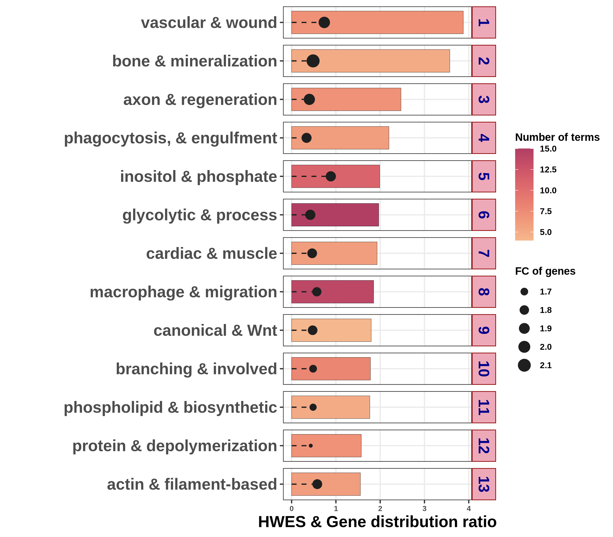
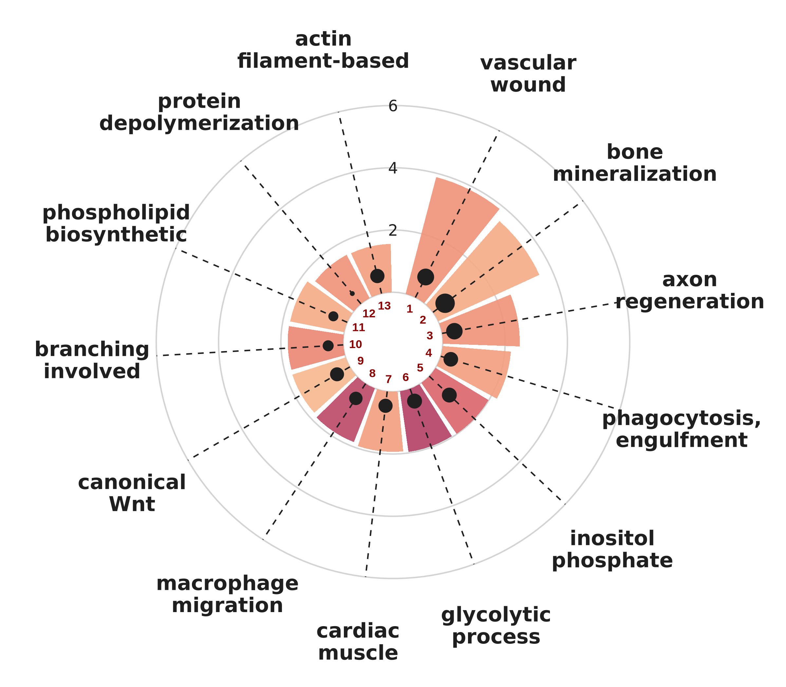

R code
0. Single-case preprocessing & analysis
The visualizations below assume a completed single-case analysis. First run:
HARMONIC_ANALYSIS(filepath = "../HARMONIC_DIFF/HARMONIC/",
type = "standard",
full_condition = c("DAY0","DAY4","DAY7","DAY10","DAY14","DAY21"),
number_of_rep = c(3, 3, 3, 6, 3, 3),
DEG_list_name = "input_DEG_list.txt",
mango_design = c("DAY4_DAY0_UP"),
core = 1,
ref_genome = "mm",
PASSED_RATIO = 25,
PASSED_NUM = 3,
similarity = 50,
preprocessing = "F")1.1. Tree plot ver. BAR
HARMONIC_TREE_PLOT_forSINGLE() summarizes the active
trees from a single-case analysis, showing each tree’s HWES and gene
distribution ratio alongside its representative biological process. Key
parameters:
-
filepath— path to the analysis output directory for the comparison of interest -
trends— direction of change to plot ("UP"or"DOWN") -
width,height— output figure size (in inches) -
plot— plot style ("bar"for the bar summary shown below) -
DEG_list_name— file name of the input DEG list
HARMONIC_TREE_PLOT_forSINGLE(filepath = "../HARMONIC_DIFF/HARMONIC/",
trends = "UP",
width = 8,
height = 7,
plot = "bar",
DEG_list_name = "input_DEG_list.txt")
1.2. Tree plot ver. CIR
Setting plot = "cir" renders the same active-tree
summary in a circular (polar) layout. Each wedge is one active tree,
arranged radially and labeled by its representative biological process,
with tree numbers shown at the center.
HARMONIC_TREE_PLOT_forSINGLE(filepath = "../HARMONIC_DIFF/HARMONIC/",
trends = "UP",
width = 8,
height = 7,
plot = "cir",
DEG_list_name = "input_DEG_list.txt")